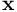
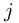
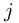

Simulate with complex geometries and complex physics
ORGANIZE_CheckFreeSurface_Version
define version number for the free-surface-check
ORGANIZE_CheckFreeSurface_Version = 2 # classical version
The default value is ORGANIZE_CheckFreeSurface_Version = 3 (new version with the options below)
Other values than 3 will invoke the classical version (ORGANIZE_CheckFreeSurface_Version=2).
compared to version 2, ORGANIZE_CheckFreeSurface_Version = 3 will:
- improve the computational performance of the free surface check,
- not make use of AdvancedFreeSurfaceAtTimeStep,
- not make use of ORGANIZE_CheckAllPointsForFreeSurfaceUntilTimeStep,
- indeed make use of ORGANIZE_CheckPointsAtFS_PerformPreCheck .
- The MESHFREE point  is a free surface point, if its local Delaunay tetrahedrization contains open faces, that means if the ring of tetras around the point is not closed.
- Let us call the corner points of the i-th local tetra by , where is the central point around which the Delaunay cells are formed.
- the boundary normal is computed from the normals of the open faces, that is (in 3D): , with the definition Of course, will have to be normalized.
- Curvature computation: (to follow)
- The different options below concern different ways of computing and admitting the Delaunay tetrahedrization.
- simple local Delaunay tetrahedrization,
- the tetras is not admissible if their circumference is bigger than dist_FS_from_BND * smoothingLength.
- add a ghost point in normal direction if the point was previously a free surface point, the ghost point status is like an inner point,
- run local Delaunay tetrahedrization together with the ghost points,
- tetras are not admissible, if their circumference is bigger than dist_FS_from_BND * smoothingLength,
- tetras are not admissible, if all corner points were free surface points at the previous time step.
ORGANIZE_CheckFreeSurface_Version = 32 #(this is basically the original ORGANIZE_CheckFreeSurface_Version = 2)
- tetras are not admissible if their circumference is bigger than dist_FS_from_BND * smoothingLength,
- tetra always admissible if one of its corner points is a (previous) inner point,
- otherwise the
 -th tetra is not admissible if for some of their corner points  we have
(the normal looks "away" from the center of the circumcircle)
where
is the computed normal of the previous time step (the point being a former free surface point) or the wall normal (the point being a regular wall point),
-th tetra is not admissible if for some of their corner points  we have
(the normal looks "away" from the center of the circumcircle)
where
is the computed normal of the previous time step (the point being a former free surface point) or the wall normal (the point being a regular wall point),
 is the center of the circumcircle of the tetra.
is the center of the circumcircle of the tetra.
ORGANIZE_CheckFreeSurface_Version = 33 #(same as ORGANIZE_CheckFreeSurface_Version = 3)
- tetras are not admissible if their circumference is bigger than dist_FS_from_BND * smoothingLength,
- a tetra is always admissible if one of its corner points is a (previous) inner point,
- otherwise the -th tetra is not admissible if for some of their corner points we have
(all corner points look "away" from the normal)
where is the computed normal of the previous time step (the point being a former free surface point) or the wall normal (the point being a regular wall point).
- add a ghost point in normal direction if the point was previously any non-interior point, the ghost point status is like an inner point,
- run local Delaunay tetrahedrization together with the ghost points,
- tetras are not admissible, if their circumference is bigger than dist_FS_from_BND * smoothingLength,
- tetras are not admissible, if all corner points were free surface points at the previous time step.